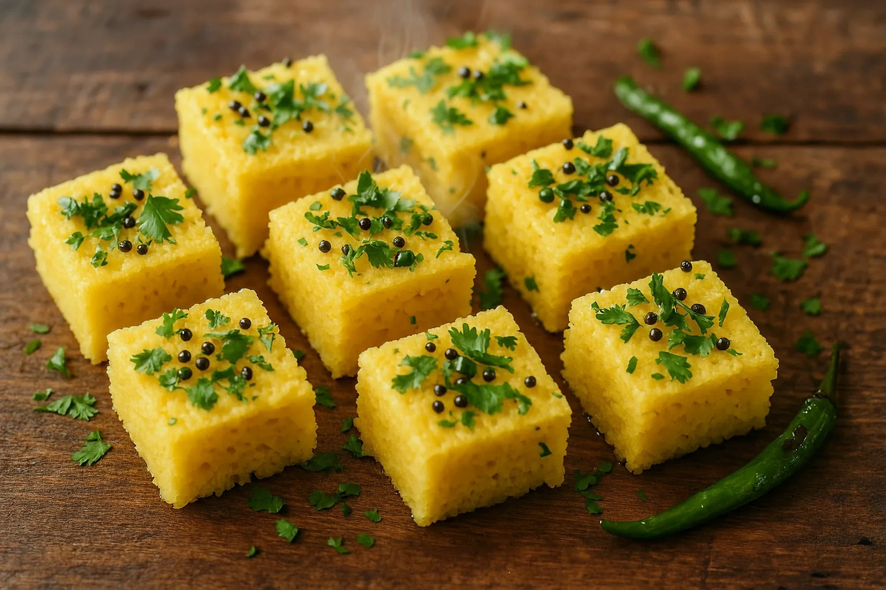

home
khaman

Description
Khaman is a soft, fluffy, and savory steamed snack from Gujarat, made from split chickpea flour (besan). It is tangy, sweet, and lightly spiced, then topped with a sizzling mustard seed tempering, fresh coriander, and grated coconut.
Ingredients
- 1 cup besan(gram flour)
- 1 tsp ginger-green chillie paste
- 1 tbsp lemon juice
- 1 tsp sugar
- 1/2 tsp salt
- 1 tsp eno(fruit salt)
- 1 cup water
- 1 tbps oil
Tampering ingredients
- 1 tbsp oil
- 1 tbsp mustard seeds
- 1 tsp sesame seeds
- 2 slit green chillies
- A pinch of asafoetida
- 1/2 cup water
- 2 tsp sugar
Steps
- Whisk the besan, ginger-green chili paste, lemon juice, sugar, salt, oil, and water in a bowl to make a smooth, lump-free batter.
- Preheat your steamer with water and grease a baking pan or dhokla tray with a little oil.
- Add the Eno fruit salt to the batter, pour a teaspoon of water over it to activate, and quickly mix in one direction until frothy.
- Immediately pour the frothy batter into the greased pan and place it in the preheated steamer.
- Cover and steam on medium-high heat for 12 to 15 minutes, or until a toothpick inserted in the center comes out clean.
- Remove the pan from the steamer, let it cool for 5 minutes, and slice the khaman into neat squares.
- Heat 1 tbsp oil in a small pan, add the mustard seeds and sesame seeds, and let them crackle.
- Add the slit green chillies, asafoetida, water, and sugar to the pan, bringing the mixture to a quick boil.
- Pour the warm tempering liquid evenly over the sliced khaman pieces so they absorb the water and turn soft.
- Garnish with freshly chopped coriander leaves and grated coconut before serving.